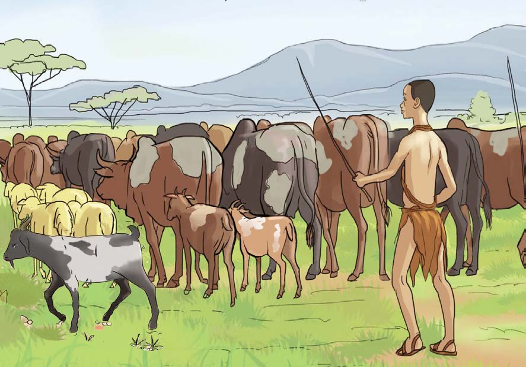
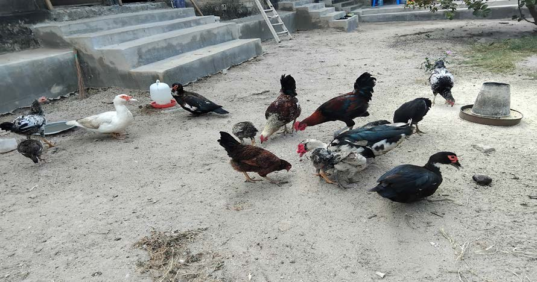

Ufugaji
Jamii za Kitanzania zinajihusisha na shughuli mbalimbali kulingana na mazingira yao. Baadhi ya shughuli hizo ni ufugaji, kilimo, uvuvi na biashara. Shughuli hizi huchangia katika maendeleo ya jamii.
Ufugaji
Ufugaji ni shughuli inayohusisha utunzaji wa wanyama na ndege. Baadhi ya wanyama ni ng’ombe, mbuzi, kondoo na sungura. Ndege wanaofugwa ni kama vile kuku, bata na kanga. Ufugaji unamsaidia mtu kujipatia chakula na fedha. Baadhi ya jamii za Kitanzania zinazojishughulisha na ufugaji ni Wamasai, Wasukuma, Wakurya, Wanyambo, Wanyaturu na Wagogo.


Maswali
Shughuli ya nne
Chunguza jamii nyingine zinazojishughulisha na ufugaji zilizopo katika eneo unaloishi.